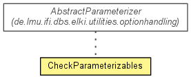

de.lmu.ifi.dbs.elki.application.internal
Class CheckParameterizables
java.lang.Object
 de.lmu.ifi.dbs.elki.application.internal.CheckParameterizables
de.lmu.ifi.dbs.elki.application.internal.CheckParameterizables
public class CheckParameterizables
- extends Object

Perform some consistency checks on classes that cannot be specified as Java
interface.
|
Field Summary |
private static Logging |
logger
The logger for this class. |
| Methods inherited from class java.lang.Object |
clone, equals, finalize, getClass, hashCode, notify, notifyAll, toString, wait, wait, wait |
logger
private static final Logging logger
- The logger for this class.
CheckParameterizables
public CheckParameterizables()
checkParameterizables
public void checkParameterizables()
- Validate all "Parameterizable" objects for parts of the API contract that
cannot be specified in Java interfaces (such as constructors, static
methods)
checkParameterizer
private boolean checkParameterizer(Class<?> cls,
Class<? extends AbstractParameterizer> par)
checkParameterizable
private void checkParameterizable(Class<?> cls,
Constructor<?> constructor)
main
public static void main(String[] args)
- Parameters:
args - Command line arguments